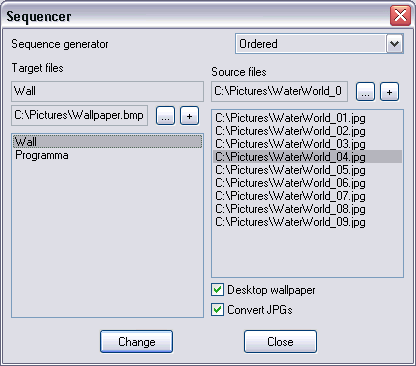

Wallpaper and other rotator
Version 1.0
Author: Python <smisoft@rambler.ru> SmiSoft (SA)
What is this:
Plugin can be used for replacing files with ones from the list with a given order.
That means, you can set only one wallpaper, sound files and so on and then replace them with another one only with one command by given order.
Plugin can rotate files only manually, for automatization you should use my tar_timer plugin.
Description:
Replaces given files with one from given list.
Aliases:
- ~change
- Syntax:
~Change [ids.../*] [+/-/+n/-n/n]
- Description:
Rotate files with given Id or calls editor.
- Parameters:
- Ids... - identifier list, divided by spaces or star (*) symbol, defines all possibly identifiers. If you define not existing identifier, it won't be processed.
- +/- - change file with given id to next/previous from the list. If you choose chaotic selection, next random file will be selected.
- +n/-n - change file with given Id to next/previous n from the list. File list cycled automatically. Result not depends on selection mode (chaotic or ordered)
- n - set file with given id to file number n from the list. File list cycled. First file has number 1.
If no parameter defined, editor called.
Field Sequence generator means, how next file will be selected: ordered or chaotic.
Field Target files shows, who will be replaced. First field mean identifier (will be used in change command from console). Another - target file name
Button ... - change file name.
Button + - add new file.
In list you can see all available identifiers. Also, you can use this hotkey while list active:
Ctrl-Up, Ctrl-Down, Ctrl-PgUp, Ctrl-PageDown - move file up/down/to the beginning/to the end of the list.
Insert, Delete - insert new file, or delete selected.

Setup:
Put files tar_change.dll, tar_change.ini and tar_change.chm to folder plugins of TaR, then simply register plugin.
How to use:
I consider a case, when you try to use my plugin for automatic replacement of desktop's wallpaper.
Create any file .bmp and place it as desktop's wallpaper. If your wallpaper collection has identical resolution (equal to resolution of your screen), you should do nothing, otherwise put the mode "Stretch". Select wallpaper file on the panel of target files. Let its identifier Wall. Now select from right column all those files, which you want to substitute. Now on the command ~change wall + you will proceed to the next wallpaper. That command may be added to timer or sheduler.
Features:
Tested only on Windows XP.
History:
[+] New feature
[*] Bug fixed
[-] Feature removed
Version 1.0 - 24.06.05
[+] First version